神山～箱根駒ヶ岳
| 日付 | 2008年2月10日（日） |
|---|---|
| 山域 | 箱根 |
| メンバー | グループ（男8女4） |
| 山行形態 | 日帰り |
| アクセス | 電車、ケーブルカー、ロープウェイ |
| ルート (Map) | 早雲山駅→神山→箱根駒ヶ岳 |
箱根の中央火口丘、神山と箱根駒ヶ岳に行く。
関東随一の観光地。
箱根の強羅駅に到着。駅内は観光客であふれている。
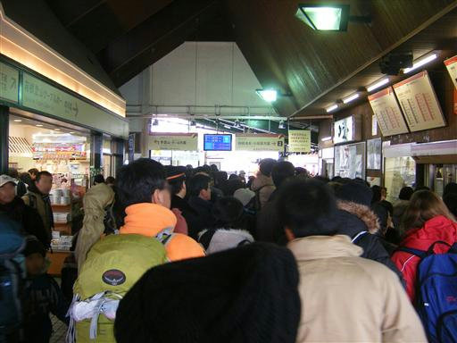
ここから山腹までケーブルカーで登る。
ケーブルカーにしては傾斜がゆるやか。

10:40 早雲山駅到着。標高770m。
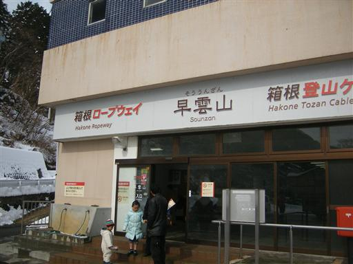
駅からは明星ヶ岳の「大」の文字がよく見える。
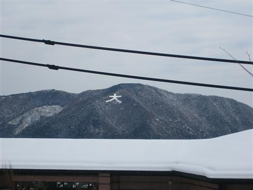
登山開始。標高はそれほど高くないのに意外に雪は多い。
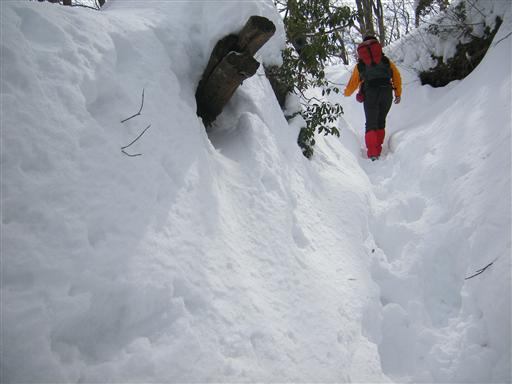
積もってる雪はあまり汚れてなくて非常にきれい。
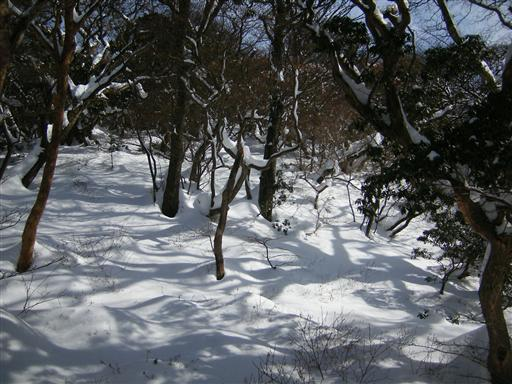
13:33 神山山頂到着。標高1438m。
箱根の最高峰。
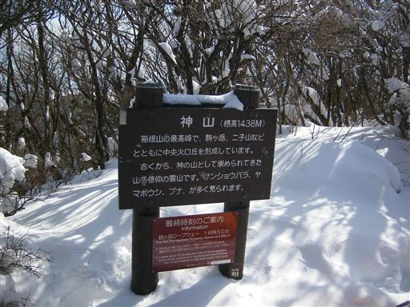
山頂から少し行くと展望が得られる。
富士山の手前に見える山は箱根の外輪山。
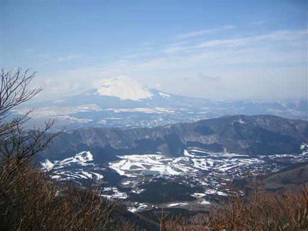
外輪山の中でひときわ大きく盛り上がっている山は金時山。
背後に薄らと丹沢の山並が見える。
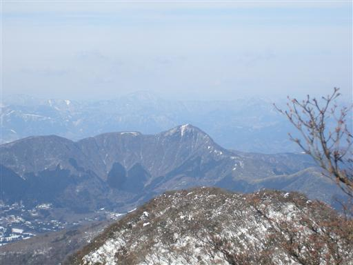
巨大なツララがあちこちにぶら下がっている。
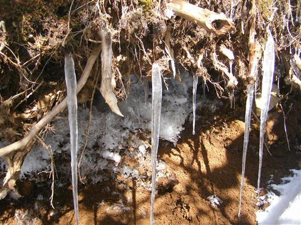
神山を下山し、箱根駒ヶ岳に向かう。
真白な雪がまぶしい。
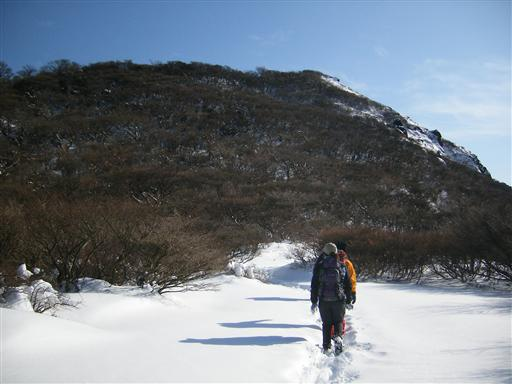
箱根駒ヶ岳山頂付近は雪が深い。
案内板の上のほうまで雪に埋もれている。
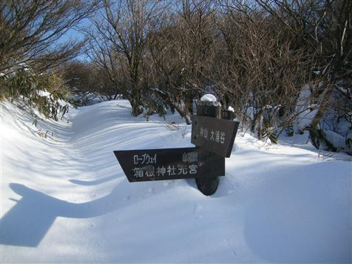
雪の中、最後の坂を登る。
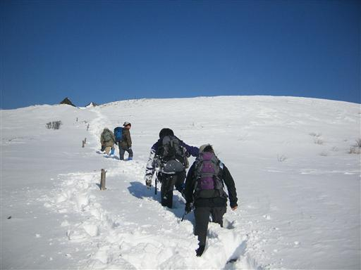
この辺りは風が強いのか、雪が縞模様になっている。
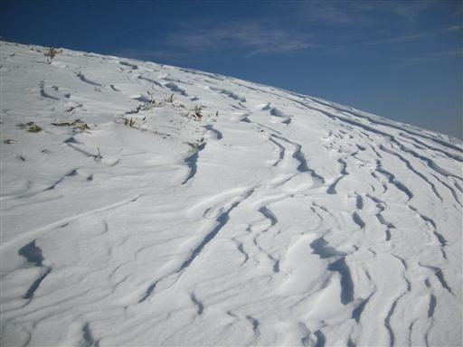
15:08 箱根駒ヶ岳山頂到着。標高1357m。
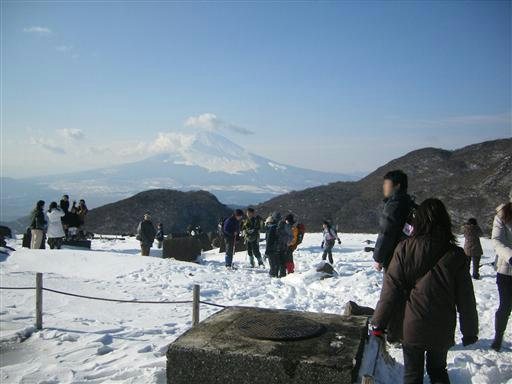
山頂からの眺め。付近に樹木が無いので展望は非常によい。
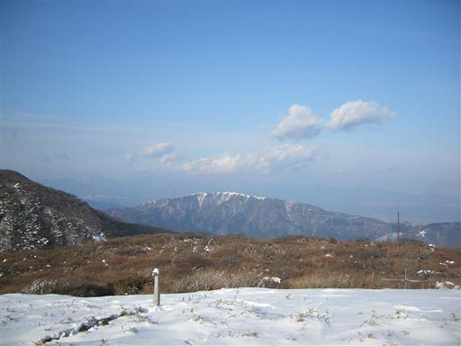
この山頂まではロープウェイで登って来れるので
広大な山頂には観光客がたくさんいる。
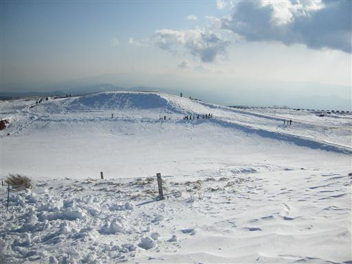
山頂に建つ神社。
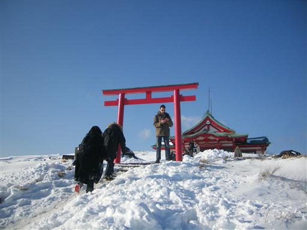
西の方には火山によってできた芦ノ湖がよく見える。

ロープウェイを使って下山する。
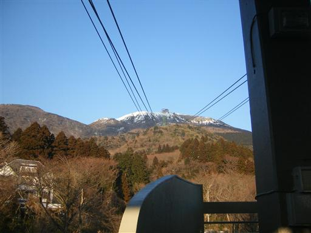
温泉に寄って帰宅。
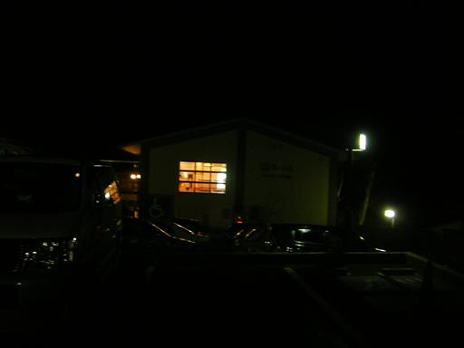
他の山行記録